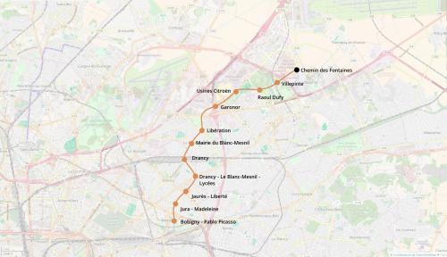

M5 Nord - Villepinte
M5 Nord - Villepinte
Bobigny - Pablo Picasso - Villepinte
Une extension de la ligne 5 du métro.
L'extension au nord de la ligne 5 vise à améliorer les connexions entre la prefecture de Bobigny et le nord-est de la Seine-Saint-Denis. Elle permettra également de desservir les quartiers industriels du Nord du Blanc-Mesnil et d'Aulnay-sous-Bois.
Enfin elle permettra de rabattre les voyageurs vers les RER B (Drancy, Villepinte), E et G (Garonor, Drancy - Le Blanc Mesnil).
Le terminus de Villepinte fournira un nouvel accès au Parc des expositions.
Voir les autres projets associés à cette ligne
Carte

Cliquer pour agrandir
Si ce projet vous intéresse n'hésitez pas à le (re-)partagez sur les réseaux sociaux ou par courriel ou à en parler autour de vous.
Si vous souhaitez travailler à la concrétisation de ce projet, passez à l'action et contactez nous.
Commenter